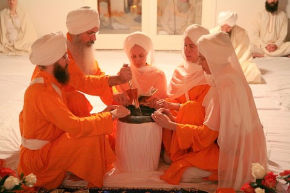

Sikhism


 s
s
s|  |
Through taking of Amrit, a Sikh qualifies him/herself as a recipient of Kamai of Akal Moorat or earnings from service and devotion to God. Through receiving Amrit, the consciousness is tempered and fear is substituted with Akal or deathlessness. In this way, a Sikh is prepared to experience Ajuni Saibhong, or a state of completion of the cycle of birth and death and an illumination of the light of the soul, while yet living in the world. Through daily practice of sadhana, or spiritual discipline, one establishes his or her spiritual bank account by continually cleansing the mind and keeping pure of heart through the recitation of the Banis and by remembering Wahe Guru with each breath throughout the busy activities of the day. Amrit Sanchar: Baptism Ceremony amrit bowl1 The Amrit of the Double-Edged Sword Siri Singh Sahib Bhai Sahib Harbhajan Singh Khalsa Yogiji addresses individuals preparing to take Amrit. It is a very fortunate day today. This occasion comes once in a lifetime. To give your ego and become egoless is a very rare opportunity. Even if you want to call it a ritual, it is a ritual of self-contained consciousness. It is not so ordinary in the life of a man that he accomplishes his “longing to belong” to someone which is Infinity. In the beginning there was the Word. Word was with God, and the Word was God.” You might not have experienced the Ultimate Truth of Infininty, but today, out of your emotional devotion, you are going to walk on that Path. It is a Path of Righteousness. Sat karam, sat kirit, sat gyaan. You are going to do something righteously on the Path of Righteousness, and you are going to know the Truth. Belonging to this fact of life is the way on which you are proceeding. It is not an easy path. Don’t misunderstand that this is just a ritual which you are doing. It is a test of your totality and personality. You have certain things to do, and you have certain sacrifices to make, and you have a certain way to live. That discipline, that tapas, that sanjam, is the way of life you are entering. It is your fortunate karma that your prayers are being answered. Understand one thing: if you would not have been existing in prayer, if you would not have had a longing to belong to someone, God would not have provided this opportunity. All prayers are not answered, all do not get to the Path and reach the destination. It is a rare opportunity. Mustuk bhaj jineh kay, tinha har sant milaya.”The destiny is written on the forehead of some who meet the Saints and take the Path of Righteousness.” It doesn’t happen to everyone all the time under all circumstances. Sometimes the longing to belong is so heavy, that God gives an opportunity to give self to Him. Today, you are going to be baptized in the Panth of Khalsa. Remember, the word Khalsa means “pure ones.” Today the Amrit, this nectar, has been prepared out of the two-edged sword, which represents the negative force and positive force and on the very tip of this sword lives the soul of the being, which is Right Conduct and Right Consciousness. Now you are going to be baptized in that Panth. You are saying, “My will is Thine, O Lord, Thy Virtues are mine, whatever comes from Thee is all to me.” You rise early in the morning, taking the Naam and reciting the Banis, living righteously, earning righteously and being in that Brotherhood. Whenever you meet each other you have to say, ‘Wahe Guru Ji ka Khalsa, Wahe Guru Ji ke Fateh!’ amritYour mantra will be Wahe Guru. It is a mantra of ecstasy. If the Seed Mantra, the Bij Mantra of Sat Nam has gone deep into your heart, then you will know better than anyone else, the rhythm of Wahe Guru, the mantra of ecstasy. Under all environments, the life of the Khalsa is the life of a soldier and a saint blended in one way of life. Sometimes, in this country especially, we do not understand the significance of a saint, nor the significance of a soldier. You might have thought that a soldier is one who kills. Then, you are the soldiers who are going to kill all the negativity and should live righteously in the light of God-consciousness to proceed on your path. Belonging together, living together, sacrificing together; today when you take this Amrit, sharing it, it means there is no difference of caste, creed, race or color. It is fortunate that you have been brought to this end now, to belong to someone, your own Creator, because of this consciousness for which you have longed through many incarnations. Last word of advice to you is: after receiving this chance which has come to you after many lifetimes, don’t miss it, and having taken it, never spoil it.